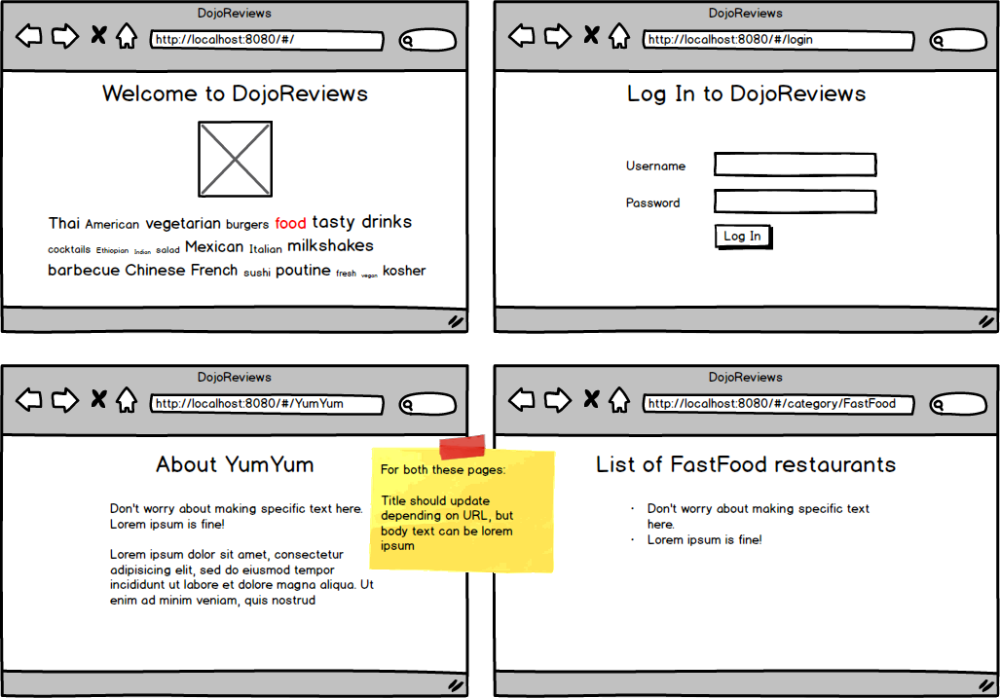

Assignment: Routing Practice
Objectives:
- Get comfortable adding routing to a project
- Practice using dynamic route variables in the Vue template
Let's practice setting up a project with a router and putting all the pieces together. This will also give us practice creating several simple components.

- Create a new project
- Install VueRouter
- Create 5 components: Home, Login, Restaurant, Summary, NotFound components (don't worry too much about the specific contents of the pages; focus mainly on the headers updating)
- Set up 5 routes:
- / - Home component
- /login - Login component
- /<<any restaurant name here>> - Restaurant component
- /category/<<any category here>> - Summary component
- catch all route - NotFound component